ShotTitan
Previsualización 3D y dirección virtual para cineastas: haz el blocking de una escena, coloca actores y utilería, configura cámaras y lentes, rueda tu cobertura, anima, ilumina… y exporta una animática.
ShotTitan funciona de tres maneras, todas con las mismas funciones:
- Aplicación de escritorio para Windows y macOS: funciona totalmente sin conexión. El control de cámara con el teléfono está disponible aquí.
- Versión web: abre el sitio web y trabaja en el navegador, sin instalar nada.
- Los proyectos son archivos
.previs.jsonsencillos que puedes llevar de una versión a otra.
Instalación y primer inicio
Windows
- Descarga
ShotTitan-Setup.exedesde la página de descargas. - Ejecútalo. Si Windows SmartScreen muestra “Windows protegió tu PC”, haz clic en More info → Run anyway (Más información → Ejecutar de todas formas); el instalador aún no tiene firma de código.
- Elige la carpeta de instalación y termina. Inicia ShotTitan desde el menú Inicio o el acceso directo del escritorio.
macOS
- Descarga
ShotTitan-mac.dmg(una sola versión para Apple Silicon e Intel). - Ábrelo y arrastra ShotTitan a Aplicaciones.
- La primera vez, haz clic derecho en la app → Abrir → Abrir. Si macOS indica que la app “está dañada” o que no se puede verificar, abre Ajustes del Sistema → Privacidad y seguridad y haz clic en Abrir igualmente, o ejecuta
xattr -dr com.apple.quarantine "/Applications/ShotTitan.app"en Terminal.
Versión web
Abre el enlace de la aplicación web desde la página de descargas en Chrome, Edge o Safari (se recomienda una computadora con una tarjeta gráfica razonablemente moderna). Tus proyectos se guardan en ese navegador.
Inicio (Home)
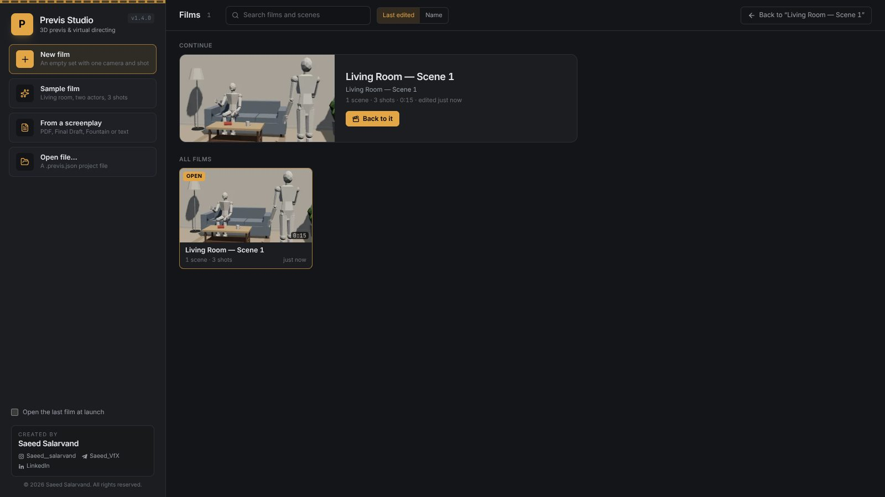
La app se abre en Home, no en la última película. A la izquierda: New film (título y primera escena), Sample film (una sala amueblada con dos actores y tres planos), From a screenplay (una película nueva y luego la ventana Guion → Película) y Open file…. A la derecha: Continue (la película en la que trabajaste por última vez) y All films, las más recientes primero, con búsqueda y orden por fecha o nombre. Cada tarjeta muestra la portada, escenas, planos, duración y la última edición; su menú ⋯ tiene Open, Rename, Duplicate y Delete. Suelta un archivo .previs.json en Home para abrirlo. Marca Open the last film at launch para saltarte Home. Home también muestra al creador, Saeed Salarvand, con su Instagram, Telegram y LinkedIn; el crédito “Crafted by” de la esquina inferior derecha abre la tarjeta Acerca de.
Actualizaciones
La app de escritorio busca una versión nueva cada vez que se abre (y cada pocas horas). Windows: la actualización se descarga en segundo plano y Restart and update la instala — o se instala al cerrar la app. macOS: te avisa de que hay una versión nueva y Download la abre (macOS solo deja que las apps firmadas se sustituyan solas). Help → Check for Updates… busca ahora. Tus proyectos se conservan.
La interfaz
| Área | Para qué sirve |
|---|---|
| Barra de herramientas (arriba) | Menú de proyecto, deshacer / rehacer, herramientas de mover · rotar · escalar, ajuste (snapping), cuadrícula y los botones grandes: Director, Draw Path, Phone. A la derecha: el plano activo y si las ediciones se aplican a todos los planos o solo a este plano. |
| Assets (izquierda) | 400 modelos low-poly en 15 categorías: personajes, animales, mobiliario, luminarias, arquitectura, edificios, vehículos, militar, industrial, naturaleza, calle, deportes, utilería, equipo de rodaje y formas de blocking. Busca, filtra, haz doble clic para añadir o arrastra a la vista. |
| Vista 3D (centro) | La vista del editor (libre) o una vista de cámara (exactamente lo que ve la cámara de un plano). Una pequeña imagen en imagen muestra la cámara activa. |
| Scene (derecha, arriba) | Todo lo que hay en la escena, agrupado: cámaras, personajes, animales, utilería, vehículos, luces, entorno. Haz clic para seleccionar, el icono del ojo para ocultar, el candado para proteger. |
| Inspector · Camera Motion · Lighting (derecha) | Ajustes de la selección; las capas de movimiento de la cámara del plano; luces, esquemas, hora del día y exposición. |
| Shots (abajo a la izquierda) | Tu cobertura en miniaturas. Haz clic en un plano para activarlo; arrastra para reordenar. |
| Timeline (abajo) | Reproducir, desplazarse por el tiempo, fotogramas clave de la cámara del plano y de cada objeto animado. |
Las cinco páginas
La barra inferior de la ventana tiene las cinco páginas, en el orden en que se hace una película: Write · Stage · Camera · Edit · Deliver (Alt+1…5). La vista 3D es la misma en todas — solo cambia lo que la rodea — y la barra superior (película, escena, búsqueda, deshacer, herramientas) está en todas.
| Página | Para qué |
|---|---|
| Write | El Director es la página: escribe una escena o un guion (o abre un archivo de guion), planifícalo y constrúyelo. A la izquierda: la película (secuencias y escenas), quién está en la escena abierta y Start here — los pasos siguientes, que se marcan al avanzar (✕ lo oculta). |
| Stage | El decorado: la biblioteca, el outliner y el inspector, la línea de claves. Sobre la vista, las herramientas con su nombre: Move, Rotate, Scale, Walk path (para la persona o el vehículo seleccionado), Add light, Camera here. |
| Camera | Plano a plano, mirando por la cámara del plano: los planos a la izquierda con su imagen, cámara, lente, duración y movimiento; Frame the shot a la derecha; las claves de cámara abajo. |
| Edit | Toda la película en una línea de tiempo grande, con el Media Pool; la vista de arriba reproduce la película. |
| Deliver | Todas las salidas en una lista: vídeo animatic, storyboard PDF, fotogramas IA, prompts de vídeo IA, el archivo del proyecto. |
Buscar (Ctrl+K, o la lupa de la barra superior) encuentra cualquier comando, página, plano, cámara, objeto o escena escribiendo unas letras; Enter lo ejecuta. El clic derecho funciona sobre lo que ves: en la vista 3D (encuadrarlo, cámara nueva sobre él, dónde empieza o acaba el movimiento, ángulo alternativo, claves sí/no), en una fila de la lista de escena (encuadrar, cámara nueva, recorrido a pie, duplicar, ocultar, eliminar), en un plano (mirar por su cámara, ángulo alternativo, claves, duplicar, eliminar) y en la línea de edición. + Camera en la barra superior añade una cámara desde la vista o encuadrada sobre alguien, cada una con su plano.
Moverse por la vista 3D
| Ratón / tecla | Vista del editor |
|---|---|
| Arrastrar con botón izquierdo | Orbitar alrededor del punto que miras |
| Arrastrar con botón central, o Shift + arrastrar con botón izquierdo | Desplazar (paneo de vista) |
| Rueda | Acercar hacia el cursor |
| Mantener el botón derecho + WASD, Q/E | Volar (el ratón mira alrededor; Shift = más rápido, rueda = velocidad de vuelo) |
| F | Encuadrar la selección (o toda la escena) |
Pulsa C para mirar a través de la cámara del plano y C de nuevo para volver. En la vista de cámara, el modo piloto (P) mueve la propia cámara:
| Entrada en vista de cámara | Qué hace la cámara |
|---|---|
| Arrastrar con botón izquierdo | Paneo / tilt (la sensibilidad depende del lente) |
| Arrastrar con botón central | Travelling lateral a izquierda/derecha y pedestal arriba/abajo |
| Ctrl + arrastrar con botón central | Dolly adelante / atrás |
| Mantener el botón derecho + WASD, Q/E | Mover la cámara por el set |
| Rueda · Alt/Ctrl + rueda | Dolly · zoom (distancia focal) |
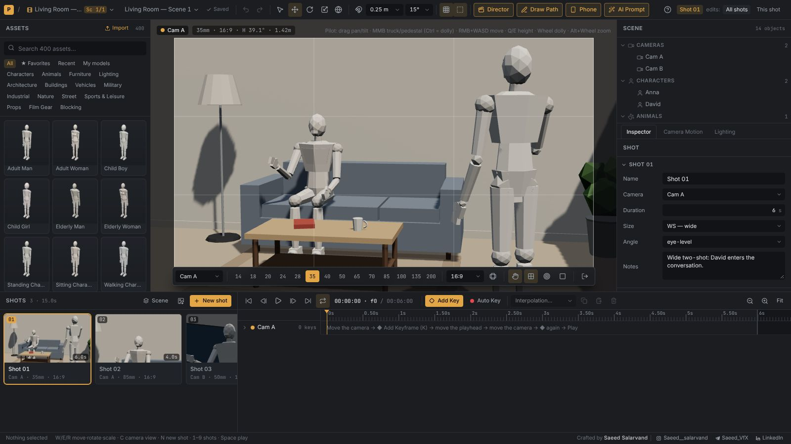
Construir una escena
- Añadir elementos: haz doble clic en un recurso, o arrástralo al suelo, a una mesa, a un estante… se coloca sobre la superficie bajo el cursor.
- Colocarlos: selecciona y luego W mover · E rotar · R escalar (Q vuelve a seleccionar). S activa/desactiva el ajuste, X alterna ejes globales/locales, End deja caer la selección sobre lo que haya debajo.
- Mundo sólido (botón de pared de ladrillo en la barra, activado por defecto): nada atraviesa nada. Un personaje o mueble que arrastras se detiene en paredes y muebles y se desliza junto a ellos (apilar encima sigue funcionando); un recorrido con claves o dibujado rodea lo que estorba (se añaden claves de desvío que se recalculan al cambiar el recorrido); el Director nunca coloca personas dentro de los muebles y las mantiene separadas de las paredes; brazos y manos se retraen en lugar de entrar en una pared, una mesa u otra persona. Desactívalo para superponer cosas a propósito.
- Organizar: Ctrl+D duplicar, Ctrl+G agrupar, H ocultar, bloquear en la lista Scene, renombrar en el Inspector.
- Dar vida: en el Inspector, Animation añade una acción en bucle (reposo, hablar, sentarse, escribir, saludar, caminar en el sitio, ruedas girando, pájaros volando…). Para que algo se desplace de A a B, consulta Animar personajes y vehículos.
Aspecto de los modelos y calidad de imagen
- Clay / Color (botón de paleta en la barra): Clay muestra todos los modelos de la biblioteca en un blanco roto algo oscuro, como una maqueta de arquitectura; las formas se leen por la luz, la sombra y la oclusión suave. Color muestra cada modelo con sus colores. Las miniaturas de la biblioteca siempre van en color.
- Piezas de pared y techo: muebles altos de cocina, campanas, espejos, cuadros, apliques, televisor de pared o persianas suben a su altura habitual al soltarlos en el suelo; lámparas colgantes, arañas, plafones y techos cuelgan de un techo de 2,8 m. Sobre una mesa o estante se quedan donde los sueltas.
- Reemplazar un modelo: selecciónalo y en el Inspector → Model → Replace… verás primero los modelos de la misma familia (otro sofá, otro árbol, otra lámpara), luego los parecidos y después el resto de la categoría. Se conservan posición, rotación, tamaño, color y cambios por plano. Marca All … in the scene para cambiar todas las copias a la vez (p. ej. todas las sillas de comedor). Clic derecho sobre un modelo → Replace with… hace lo mismo desde la vista 3D. Deshacer con Ctrl+Z.
- Color de un modelo: selecciónalo y en el Inspector, Color, elige una muestra o + para cualquier color (funciona con varios modelos seleccionados). Default le devuelve el aspecto Clay / Color.
- Calidad de imagen (Low · Medium · High · Ultra, junto a la paleta): detalle de los modelos (bordes redondeados, cojines blandos, curvas más suaves), oclusión ambiental suave, nitidez de sombras y densidad de píxeles. Low para una tarjeta gráfica modesta, Ultra para una potente. Es un ajuste de vista: el proyecto no cambia, y los animatics y storyboards se exportan con la misma calidad.
Importar tus propios modelos
Trae tus propios modelos 3D — .glb, .gltf (autocontenido), .fbx u .obj. Pulsa Import arriba del panel Assets o suelta el archivo sobre la ventana.
- Tamaño: los archivos en centímetros o milímetros se reconocen y se convierten a metros; escribe la altura real para cambiarla. El modelo queda sobre el suelo, centrado.
- Aspecto: conserva los materiales del modelo o usa el aspecto de arcilla del resto de la escena.
- Tipo: objeto, personaje, animal, vehículo o arquitectura — dónde aparece en la lista de la escena y cómo lo describen los prompts de IA.
- Los modelos importados están en Assets → My models para todos los proyectos y escenas, y funcionan en decorados reutilizables. El archivo se guarda una vez; un archivo de proyecto guardado lo incluye, así se abre en cualquier ordenador.
- Los modelos importados son estáticos: muévelos con fotogramas clave (K) o Draw path — los ciclos de caminar son para los personajes incluidos.
Imágenes de referencia
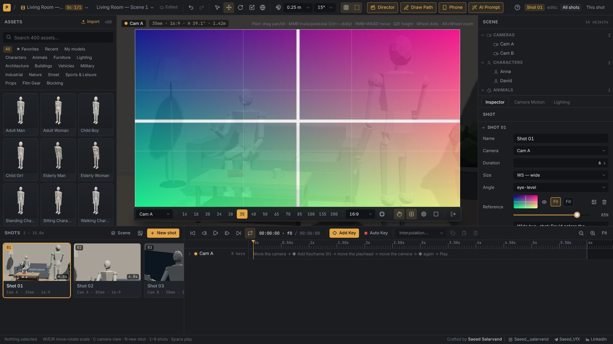
- Sobre el encuadre de la cámara — no selecciones nada para que el Inspector muestre los ajustes del plano y pulsa Reference → Add image…: una viñeta de storyboard, un fotograma de una película que quieras igualar, una foto de la localización. En la vista de cámara (C) se superpone al encuadre; ajusta su opacidad, Fit (imagen completa) o Fill (cubrir el encuadre), ocúltala con el ojo, reemplázala o quítala. Cada plano tiene la suya; se guarda con el proyecto y se puede deshacer.
- Como panel en la escena — Import en el panel Assets (o soltar el archivo en la ventana) también acepta .png, .jpg, .webp: la imagen queda de pie sobre el suelo como un panel de dos caras, de 1,5 m de alto por defecto. Úsala como fondo, vista tras una ventana o moodboard junto al decorado; está en My models como los modelos importados.
Cámaras y lentes
Añade una cámara exactamente donde estás mirando con Shift+C. Selecciona una cámara para ajustar en el Inspector: distancia focal, sensor / film back, relación de aspecto (2.39, 2.35, 1.85, 16:9, 4:3, 3:2, 1:1, 4:5, 9:16), distancia de enfoque y diafragma, recorte. [ y ] recorren las cámaras. La vista de cámara muestra el encuadre exacto con zonas seguras y guías.
Planos
Un plano es una cámara más una duración y sus propios ajustes. Pulsa N (o New shot) para crear un plano a partir de la cámara activa, 1–9 para cambiar de plano, 0 para la escena base.
- All shots / This shot (arriba a la derecha): elige si mover un objeto lo cambia en todas partes o solo en el plano activo (un “cheat” para este ángulo). Los objetos modificados muestran una insignia con Reset to scene (restablecer a la escena).
- Cada plano conserva su propio tamaño, ángulo, notas, retoques de iluminación y exposición: la lista de planos se arma sola.
Encuadrar un plano (Frame the shot)
Di qué plano es y la cámara va allí. Con un plano activo (o su cámara seleccionada) el inspector muestra Frame the shot: On (quién o qué — se elige quien está en cuadro), Size (EWS … ECU), Angle (a la altura de los ojos, picado, contrapicado, cenital, holandés, a ras de suelo), Side (de frente, ¾ izquierda/derecha, perfil izquierdo/derecho, de espaldas — izquierda y derecha del sujeto), Lens (auto o 18–135 mm: la cámara se acerca o se aleja para mantener el tamaño). Si hay una pared o muebles detrás, la cámara se acerca y abre la lente.
- Start here / End here: el movimiento empieza (o acaba) donde está la vista ahora — mira por la cámara y muévela, o usa la vista del editor. Si aún no hay movimiento, el otro extremo es la cámara tal como está, así que hay un movimiento al momento.
- Si la cámara ya se mueve en el plano, un cambio pregunta qué hacer: Move the whole move (todas las claves se desplazan igual: el mismo movimiento, reencuadrado), Key it at the playhead o Switch the keys off. Mover a mano una cámara con claves muestra la misma elección sobre la vista.
- Alternate angle: una cámara nueva sobre el mismo momento desde el otro lado, un tamaño más cerrado, montada justo después del plano.
- Keys on / off: ver abajo.
Película, escenas y decorados
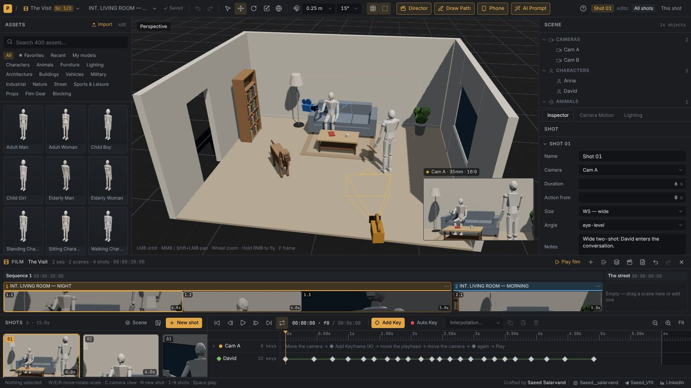
Una película se compone de secuencias, las secuencias de escenas y las escenas de planos. Cada escena tiene su propio decorado 3D, iluminación y hora del día, reparto, fotogramas clave, planos y deshacer. El botón de película en la barra (junto al nombre de la escena, p. ej. Sc 2/5) lista todas las escenas; haz clic en una para abrirla. Los proyectos que tenías antes se convirtieron cada uno en su propia película.
- New scene… — nombre, secuencia y un decorado vacío o uno de la biblioteca. Duplicate this scene copia decorado, reparto, luces y planos. Add a project as a scene… copia otro proyecto a esta película (el original no cambia).
- Línea de tiempo de la película (Shift+F) — toda la película en una fila: secuencias, escenas de colores y sus planos según su duración, numerados escena.plano (3.2), con la duración total. Haz clic en un plano para abrir su escena en ese plano. Arrastra la cabecera de una escena para reordenarla, también a otra secuencia. Doble clic para renombrar. Los botones propios de deshacer / rehacer de la película deshacen cambios de orden y nombre.
- Play film reproduce plano tras plano y abre la escena siguiente al terminar una. Export film animatic (o Whole film / una secuencia en el diálogo de animática) renderiza todas las escenas en un solo vídeo.
Decorados reutilizables
Construye una localización una vez y úsala en muchas escenas — el mismo dormitorio de noche en la escena 1 y de día en la 5, cada una con su iluminación, actores y animación.
- Abre la Set library (menú de película o línea de tiempo), nombra el decorado y pulsa Save set. Por defecto se guardan arquitectura, muebles y objetos, y vehículos; las luces y los personajes quedan en la escena salvo que los marques.
- En New scene… elige el decorado, o pulsa Place in scene en la biblioteca. Los elementos quedan enlazados: muévelos, cámbialos o bórralos libremente en esa escena — solo cambia esa escena.
- Para cambiar el decorado en sí, edítalo en una escena que lo use y elige New version of “…” → Save new version. Las demás escenas muestran “El decorado tiene una versión nueva”: Update scene la aplica (Ctrl+Z la deshace) y conserva lo que esa escena cambió; Later vuelve a preguntar la próxima vez; Detach hace que los elementos sean propios de la escena.
Línea de tiempo y fotogramas clave
- Pon el cabezal de reproducción en 0 s, encuadra el plano y pulsa K.
- Mueve el cabezal, cambia el encuadre y pulsa K otra vez. Pulsa Space para reproducir.
Arrastra los rombos para cambiar su tiempo, Delete los elimina, Ctrl+C/V copia claves de cámara, el menú Interpolation define Smooth / Linear / Ease / Hold. Auto Key (Shift+K) crea una clave automáticamente con cada cambio de cámara. Arrastra el marcador final para cambiar la duración del plano. ←/→ avanzan un fotograma, Shift+←/→ saltan entre claves. El botón de filtro a la derecha de la barra de la línea de tiempo deja filas solo para los objetos seleccionados (como en Blender); los demás objetos animados se pliegan en una línea: haz clic en ella para verlos todos. La tira de película de arriba se oculta con su flecha (o Shift+F); su menú ⋯ tiene secuencias, la biblioteca de decorados, exportaciones y el deshacer de la película.
Claves de cámara sí / no (como un cronómetro): el botón Keys on de la línea de claves (y el botón ⏱ de la línea Edit para toda la escena) apaga los fotogramas clave de la cámara sin borrarlos — para este plano o para todos los de la escena. Apagadas, la cámara se queda en su ajuste, los cambios van al ajuste y el movimiento del clip aparece tachado; enciéndelas y el movimiento vuelve.
Edición (la línea de tiempo Edit)
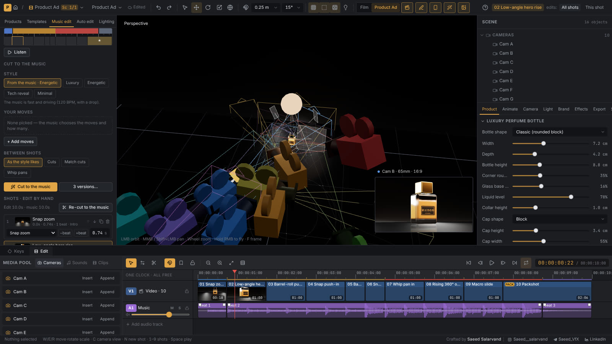
Las pestañas sobre el panel inferior cambian entre Keys (los fotogramas clave del plano activo; Espacio reproduce y repite ese plano) y Edit, una línea de tiempo como la de un programa de edición. En Edit, Espacio reproduce todo el montaje: cada plano sigue al anterior con su propia cámara, la música continúa a través de los cortes y el diálogo se oye bajo la imagen que lo muestra. El estudio de anuncios de producto abre la línea de tiempo Edit por sí solo.
- V1 contiene los planos uno tras otro (miniaturas y los fotogramas clave de la cámara como pequeños rombos). A1, A2… contienen los sonidos con su forma de onda. Cada cabecera de pista tiene bloqueo, silencio (M), solo (S), volumen y un medidor de nivel; doble clic en el nombre para renombrarla; Add audio track añade Dialogue, Music o Effects.
- Selección (A): arrastra un clip para moverlo en el montaje (Alt lo copia); arrastra su extremo derecho para recortar el final y el izquierdo para recortar el inicio: lo que sigue se cierra (ripple), y un inicio recortado mantiene la imagen en el mismo momento de la acción y del movimiento de cámara.
- Trim (T): arrastra un corte para hacer roll (un plano más largo, el siguiente más corto); arrastra dentro de un clip para hacer slip (mismo lugar y duración, un momento anterior o posterior).
- Cuchilla (B): haz clic en un clip o un sonido para cortarlo ahí. Ctrl+B corta en el cabezal.
- Ajuste (N) a cortes, bordes de sonidos, marcadores, el cabezal y los pulsos de la música; mantén Mayús para arrastrar libremente. Ctrl+rueda hace zoom, Mayús+Z encaja el montaje y el botón de filas cambia la altura de las pistas.
- Sonidos: arrastra para mover (o a otra pista), los extremos para recortar, los cuadrados blancos de las esquinas superiores para los fundidos y la línea horizontal para el nivel. Clic derecho: fundidos, Crossfade into the next sound, nivel al 100 %.
- Clic derecho en un clip: cortar aquí, duplicar, eliminar, Transition in (corte, fundido encadenado, fundido a negro, cortinilla: de 0,25 a 2 s), etiqueta de color, abrir sus fotogramas clave. Las transiciones se ven en directo en la vista de cámara y se mezclan en el vídeo exportado.
- Marcadores (M) en la regla: arrastra para moverlos, doble clic para renombrar, clic derecho para el color. Entrada / Salida (I, O; Alt+X las borra): la reproducción se queda entre ellas (con Loop, en bucle).
- El Media Pool a la izquierda. Project: la película como las carpetas de un programa de edición — cada secuencia es una carpeta con sus escenas (+ Sequence crea una, + en una carpeta añade una escena, arrastra una escena a otra carpeta para moverla, doble clic para renombrar, clic en una escena para abrirla; la escena abierta lista sus planos). Cameras: una imagen de lo que ve cada cámara, un nombre que lo dice (tamaño · quién · lente) y qué planos la usan; clic en la imagen para mirar por ella, doble clic en el nombre para renombrarla, Insert / Append o arrastrar a V1. Sounds: importar o arrastrar a una pista.
- Huecos: arrastra un clip por V1 y deja tiempo en negro detrás; suéltalo sobre otro clip para ponerlo en su lugar. Clic derecho en un clip → Insert a 1 s gap before; haz clic en un hueco y Supr lo cierra; ⋯ → Close all gaps.
- + Shot (barra de la línea de tiempo, o el + al final de V1): un plano nuevo desde la vista o desde cualquier cámara, en el cabezal o al final. Las herramientas menos usadas (Trim, In / Out, bucle, zoom, altura de pista) están en ⋯.
- Cada clip muestra su movimiento de cámara (p. ej. ➚ Dolly in · Pan R), calculado a partir de sus claves.
- Supr / Retroceso elimina lo seleccionado: clips (el resto se cierra), sonidos, marcadores. Eliminar la música del anuncio quita la música. Todo se deshace en un paso.
- Selección con recuadro: arrastra en un espacio vacío para seleccionar los clips, sonidos y marcadores bajo el recuadro (Mayús añade). Al arrastrar el cabezal se oyen trozos cortos del sonido (scrub).
- Fotogramas clave de volumen: Alt+clic en la línea de nivel de un sonido añade un punto, arrastra los puntos para dar forma al nivel y Alt+clic en un punto lo elimina (clic derecho → Clear volume keyframes).
- Velocidad (clic derecho en un clip → Speed, 25 %–400 %): cámara lenta o más rápido; la duración del clip en el montaje cambia con ella y el sonido vinculado se reproduce a la misma velocidad.
- Toda la película en una línea de tiempo: cada escena sigue a la anterior (una franja con los nombres de las escenas sobre V1), la escena abierta se ve clara y las demás atenuadas — haz clic en una para abrirla. Espacio reproduce la película desde el cabezal por todas sus escenas.
- Cuando cada plano empieza en la acción donde empieza en el montaje (una toma, un anuncio), todas las pistas son libres en el reloj del montaje; en una película con cortes, la pista de diálogo está Linked a las imágenes y la de música es Free: el botón de la cabecera lo cambia.
| Teclas (línea de tiempo Edit) | Acción |
|---|---|
| Espacio · J K L | Reproducir / parar el montaje · atrás 1 s, parar, reproducir |
| ↑ ↓ · ← → · Inicio Fin | Corte anterior / siguiente · un fotograma · inicio / final |
| A · T · B · N | Selección · Trim · Cuchilla · ajuste |
| Ctrl+B · Ctrl+C/V · Ctrl+D | Cortar en el cabezal · copiar / pegar clips · duplicar |
| Q · W (Ctrl+Mayús+[ / ]) | Recorte con arrastre del inicio / final del clip bajo el cabezal hasta el cabezal |
| E | Extender edición: mover el corte más cercano al cabezal |
| , . (Mayús: 5 fotogramas) · Alt+, . | Deslizar el contenido del clip un fotograma (slip) · desplazarlo entre sus vecinos (slide) |
| F | Match frame: este momento del plano en la página Camera |
| M · I O · Alt+X | Marcador · Entrada / Salida · borrar Entrada / Salida |
| = - · Mayús+Z | Zoom · encajar |
| Supr · Esc | Eliminar (ripple) · quitar la selección |
Diálogo (voces)
Los personajes pueden hablar de verdad. Dialogue (a la derecha de las pestañas Keys / Edit) abre las líneas de la escena: quién dice qué, cuándo y cómo. Una línea obtiene su sonido de tres maneras y va a la pista Voices, bajo los planos que muestran ese momento:
- Voice it — la voz integrada (Kokoro, inglés, 24 voces) dice la línea en este ordenador, gratis y sin conexión. La primera vez descarga su modelo (~90 MB) y lo guarda. Voice all da voz a todas las líneas sin sonido (o cambiadas desde entonces).
- Record — tu propia voz con el micrófono (pulsa de nuevo para parar).
- File — un archivo de sonido (MP3, WAV, M4A, OGG, FLAC) para la línea.
Cada línea tiene un hablante (o una voz en off), un inicio (segundos de la escena; ⇤ Playhead la pone en el cabezal), su texto, una emoción (calma, alegre, emocionado, triste, enfadado, asustado, susurro, grito) y un ritmo. La voz integrada no tiene control de emoción propio: la emoción se da con el ritmo, el nivel y la puntuación. Character voices fija la voz y el ritmo de cada personaje (▶ para oírla); los personajes nuevos reciben voces distintas acordes con la figura.
En la línea de tiempo Edit, clic derecho en un clip → Add dialogue here…; las líneas sin sonido aparecen como recuadros discontinuos donde se dicen, y doble clic en el sonido de una línea la abre. Mientras suena una línea, la cabeza del hablante se mueve un poco con la voz (también en los vídeos exportados). Las líneas con voz son sonidos normales: muévelas, recórtalas, haz fundidos; borrar el sonido conserva la línea.
Al importar un guion se pregunta Spoken dialogue? antes de construir: Yes da voz a todas las líneas (un paréntesis como «(whispering)» o «(angry)» se convierte en la emoción); No deja las líneas en cada escena sin sonido, para darles voz después.
Movimiento de cámara
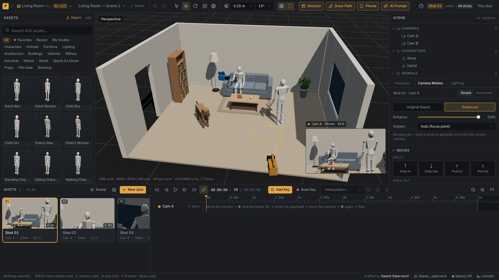
La pestaña Camera Motion convierte claves sencillas en movimientos cinematográficos sin tocar las claves en sí. Elige un movimiento (dolly in / out, push in, paneo, tilt, travelling lateral, pedestal, grúa, jib, arco, órbita, circular, zoom, dolly zoom, seguimiento, cámara que precede, sobre el hombro, paralaje, revelación, cámara en mano…) y su intensidad, o combina capas de efectos:
| Capa | Qué hace |
|---|---|
| Timing | Aceleración/desaceleración suave, velocidad constante, rampas de velocidad, pausas |
| Path | Da forma al movimiento A→B como arco, órbita, grúa o línea recta |
| Smoothing · Polish | Elimina saltos; analiza y corrige movimientos bruscos |
| Tracking · Composition | Mantiene a un sujeto en cuadro, en la posición de pantalla elegida |
| Rig · Shake | Trípode, cámara en mano, al hombro, gimbal, steadicam, dolly, slider, grúa, jib, dron, soporte de auto, cablecam; vibración de cámara según el estilo |
Bake escribe el resultado en fotogramas clave simples; Restore recupera la toma original.
Draw Path (cámara)
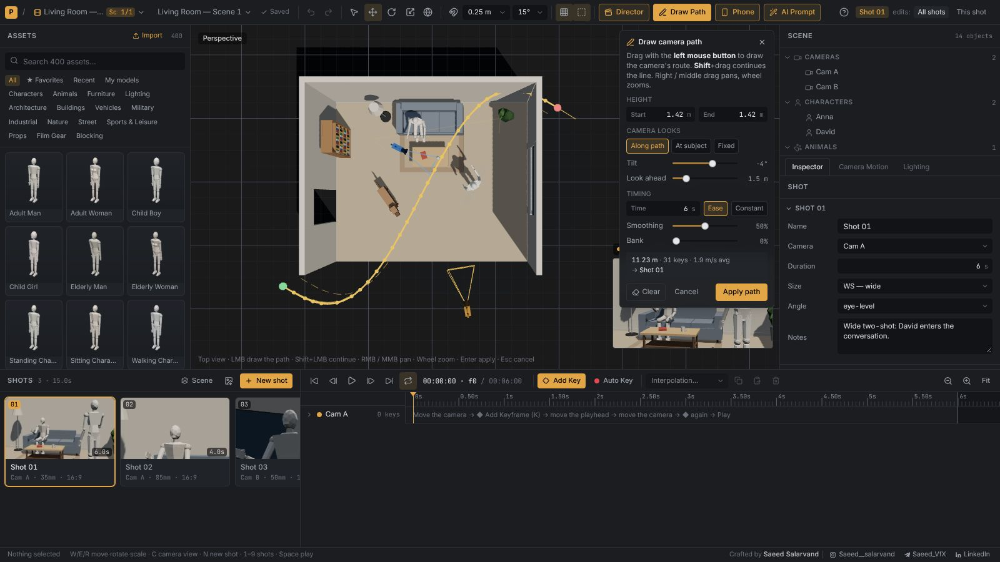
- Haz clic en Draw Path (Dibujar trayectoria) o pulsa Shift+D. La vista cambia a una vista superior de la escena.
- Dibuja el recorrido con el botón izquierdo del ratón. Shift+arrastrar continúa la misma línea. Arrastrar con el botón derecho / central desplaza la vista, la rueda hace zoom.
- Ajusta la altura inicial y final, hacia dónde mira la cámara (Along path: a lo largo de la trayectoria; At subject: hacia un personaje que elijas; o Fixed: fija), la duración, velocidad Ease o Constant, el suavizado y Bank (alabeo en las curvas, estilo dron).
- Apply path (o Enter) escribe las claves en la cámara del plano activo (crea una cámara y un plano nuevos si no hay ninguno activo). Esc cancela.
Animar personajes y vehículos
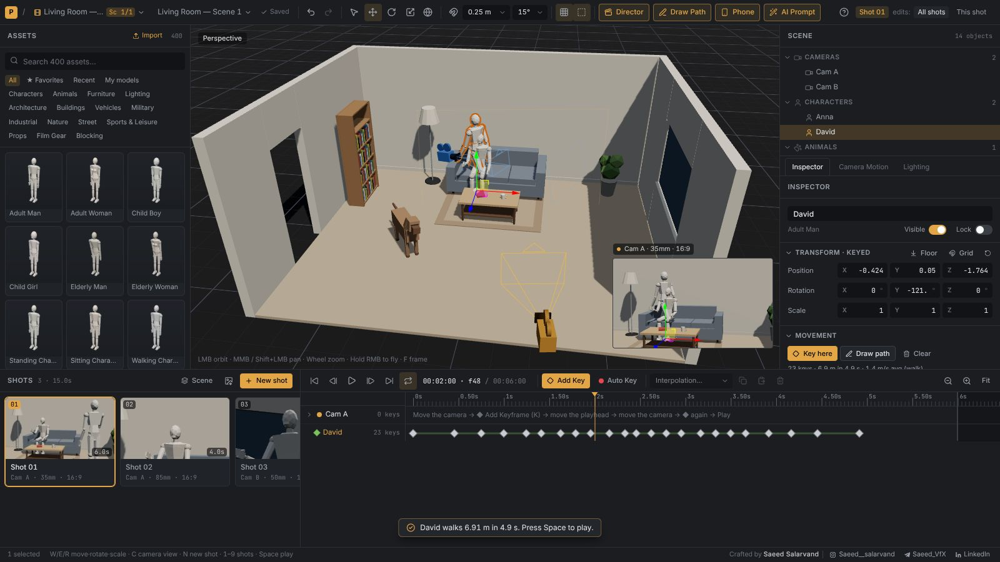
Con fotogramas clave
- Selecciona el personaje (o el auto), pon el cabezal donde empieza el movimiento y pulsa K (o Key here en la sección Movement del Inspector).
- Mueve el cabezal y mueve el objeto con el gizmo: una vez que un objeto tiene claves, moverlo escribe automáticamente una clave en la posición del cabezal.
- Pulsa Space. El objeto se desplaza entre sus claves.
Con un recorrido dibujado
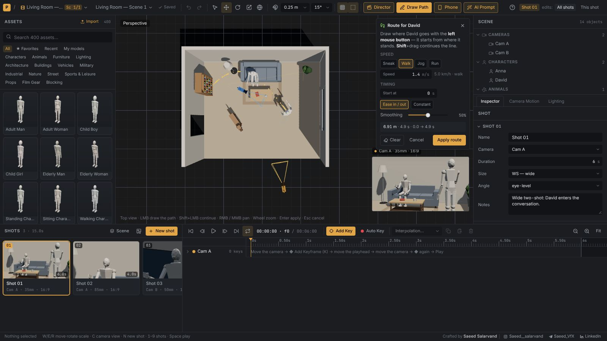
En Movement, haz clic en Draw path, dibuja hacia dónde debe ir (parte desde donde está), elige una velocidad (Sneak / Walk / Jog / Run para personas, 15–80 km/h para autos) y pulsa Apply route. Vuelve a dibujar desde una posición posterior del cabezal para encadenar movimientos (“camina hasta la mesa y luego corre hacia la puerta”).
Lo que ocurre automáticamente
- Andar según la velocidad: quieto → reposo, lento → caminar, más rápido → trotar, rápido → correr, con transiciones suaves. Los pies no patinan: los pasos siguen la distancia recorrida. También puedes elegir un modo de andar fijo en Gait.
- Face travel (mirar hacia la dirección de avance): el cuerpo gira hacia donde va y mantiene esa orientación al detenerse. Desactívalo para controlar la rotación con claves.
- Vehículos: las ruedas giran según la distancia y las delanteras se orientan en las curvas; los autos estacionados enderezan sus ruedas.
- Entre movimientos, un personaje reproduce su propia animación (por ejemplo Talk o Wave) si la tiene.
- La acción es compartida por todos los planos (continuidad en toda tu cobertura). En los ajustes de un plano, Action from permite que el plano empiece más adelante en la acción.
Cambios de acción en el tiempo
En la sección Animation del Inspector, Changes over time → At playhead hace que un personaje haga otra cosa desde ese momento de la escena: está de pie hablando, a los 6 s se sienta, a los 12 s se levanta y saluda. Cambia el tiempo o la acción en la lista, o quítala (todo se puede deshacer). Caminar entre marcas con clave sigue siendo automático — la acción se reproduce cuando el personaje está quieto. El Director y Screenplay → Film también escriben estos cambios (“camina hasta el sofá y se sienta”).
Sonido (diálogo, música, efectos)
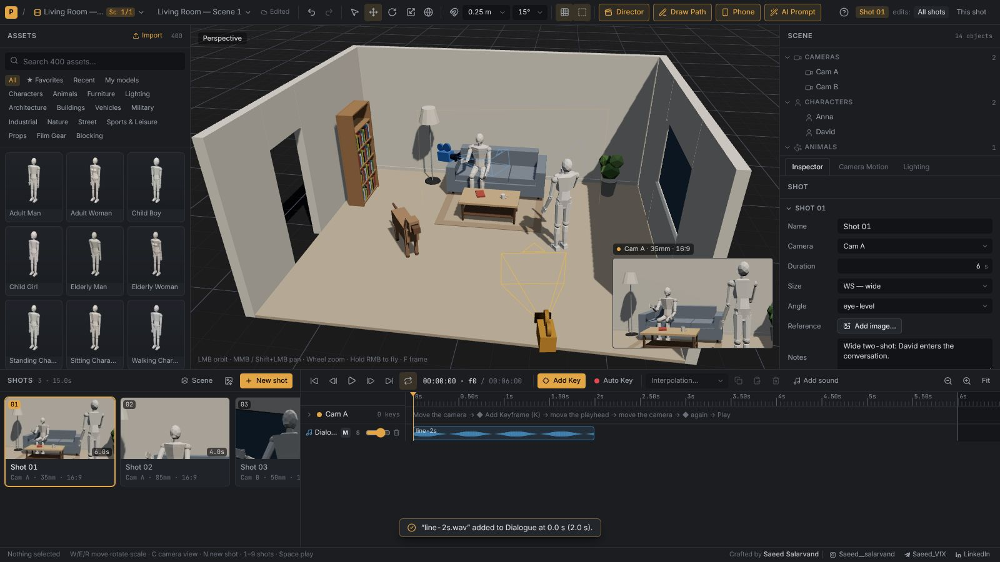
En la línea de tiempo, Add sound → Dialogue / Music / Effects coloca un archivo de audio (MP3, WAV, M4A/AAC, OGG, FLAC) en el cabezal. Los sonidos viven en el tiempo continuo de la escena — el mismo reloj con el que se mueven los actores — así cada plano oye la parte de la escena que muestra y un diálogo sigue sincronizado entre cortes.
- Cada pista tiene M (silenciar), S (solo) y un control de volumen; si la pista está ocupada, el siguiente sonido va a una pista nueva del mismo tipo.
- Arrastra un sonido a izquierda / derecha para moverlo en el tiempo, arriba / abajo a otra pista; pasa por encima y pulsa × para borrarlo. Todo se puede deshacer.
- La reproducción suena con la imagen; Export animatic (escena, secuencia o toda la película) lo escribe en el vídeo.
- Los archivos de sonido se guardan una vez en este navegador / ordenador y dentro de los archivos de proyecto.
Iluminación
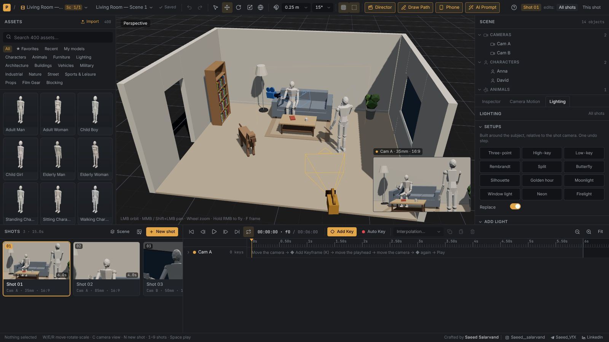
- Esquemas (Setups): con un clic se coloca un esquema de iluminación completo alrededor del sujeto y la cámara: tres puntos, high-key, low-key, Rembrandt, split, butterfly, silueta, hora dorada, luz de luna, luz de ventana, neón y luz de fuego.
- Luces (Lights): spot, puntual, de área y sol; color en Kelvin, intensidad en pasos (botones de ±1 paso), suavidad, haz, sombras, efectos (parpadeo, vela, fuego, TV, pulso, policía, relámpago). Shift+L añade un spot.
- Prácticas (Practicals): lámparas, candelabros, apliques y otras luminarias pueden encender su propia luz (Inspector → Switch on light).
- Hora del día (Time of day) mueve el sol y el cielo; Exposición (Exposure) aclara u oscurece toda la imagen. Ambas pueden ajustarse por plano.
- Usa Solo en una luz para ver qué aporta por sí sola.
Director (construcción de escenas con IA)
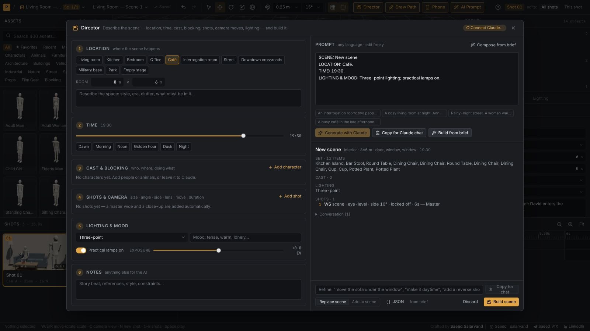
El Director tiene un solo cuadro para todo: unas líneas sobre una escena («Un café de noche. Emma está junto a la ventana. Tom entra y va hacia ella. “Perdona el retraso”, dice Tom.»), un guion entero o un archivo de guion (Open script file, o suéltalo en el cuadro). Reconoce qué es — One scene o Screenplay (puedes cambiarlo) — y muestra lo que ha leído. Ábrelo con D desde cualquier sitio, o ve a la página Write, donde es la propia página.
- Plan with Claude, Copy for Claude chat (sin clave API) o Plan without AI (el lector de guiones integrado: una descripción se lee como un guion de una escena — personas, lugar, momento, frases entre comillas como diálogo).
- Una sola vista previa para ambos y luego Build into: This scene, Add to this scene o New scene in the film para una escena; New film o Add to this film para un guion. Si hay frases habladas, pregunta si darles voz. Si quieres, primero Refine el plan con palabras sencillas.
Conectar Claude
- Haz clic en el indicador de estado en la esquina superior derecha del Director (Connect Claude…).
- Pega tu clave de API de Anthropic (créala en la Claude Console; el enlace está en el panel) y haz clic en Save key. La clave se verifica y luego se guarda: en la aplicación de escritorio, el sistema operativo la cifra; en la versión web, permanece en ese navegador.
- Elige el modelo: Opus 5.5 (los mejores planes), Sonnet 5.5 (equilibrado) o Haiku 5.5 (el más rápido y económico).
Sin clave de API: tu chat de Claude
¿Ya pagas Claude (Pro / Max)? Úsalo directamente — sin clave de API y sin coste extra:
- Escribe el prompt (o rellena el brief) y pulsa Copy for Claude chat. Se copia la instrucción completa: formato, reglas, el catálogo de objetos y tu petición.
- Pégala en un chat nuevo en claude.ai o en la app de Claude y envíala.
- Copia la respuesta completa de Claude, pégala en el cuadro que se abrió en el Director y pulsa Read plan. Revísalo y pulsa Build scene.
- Para cambiar algo, escríbelo en el campo Refine y pulsa Copy for chat: se incluye el plan actual, así Claude lo revisa en lugar de empezar de cero.
"from": {"behind": "emma"}) y la cámara empieza sobre el hombro de esa persona en lugar de donde la pondría el tamaño de plano.Fotogramas IA (AI Frames)
Convierte cualquier momento de la escena en un fotograma de storyboard terminado con IA — tu escena es la referencia, no solo un prompt. Pulsa AI Frames en la barra (una ventana aparte; nada más cambia).
- Referencia: la cámara del plano activo o la vista actual, en el cabezal. La app renderiza el fotograma (con luz plana por defecto), un mapa de profundidad exacto, un mapa de regiones (un color por objeto) y líneas, y sabe quién está dónde. Actualiza tras mover el cabezal o la vista.
- Modelo: MOSS (MOSS-Image con su control de color/profundidad), Flux (Flux.1 Depth — composición desde la profundidad) o Qwen (Qwen Image Edit redibuja el fotograma y acepta fotos de las caras).
- Estilo: diez looks — boceto a lápiz, tinta y rotulador, carboncillo, foto cinematográfica, cine negro, animación 3D, anime, cómic, acuarela, pintura de concepto. Las miniaturas son vistas previas de tu propio fotograma hasta que pulses Make the 10 style samples en Settings (entonces son muestras reales de IA, por modelo).
- Caras (opcional): una foto por actor en cuadro (la usa Qwen). Notas (opcional): lo que el fotograma no puede mostrar. El texto que acompaña al fotograma se escribe solo a partir de la escena.
- Variantes 1–4 y Generate. Los fotogramas quedan con la escena; ★ elige uno para su plano, y la opción AI frames del storyboard PDF lo imprime en lugar del render 3D. Con make the missing ones (modelo y estilo elegidos allí mismo) cada plano sin fotograma ★ recibe uno durante la exportación, desde su cámara.
Settings: la dirección de ComfyUI (tu GPU — gratis e ilimitado — o una alquilada como RunPod). Inicia ComfyUI con --enable-cors-header. La app lee qué nodos y modelos tiene el servidor, elige los archivos por nombre y dice exactamente qué falta. Puedes sustituir el workflow de un modelo por el tuyo (ComfyUI → Workflow → Export (API)) con los tokens {{prompt}}, {{negative}}, {{color}}, {{depth}}, {{regions}}, {{edges}}, {{face1}}, {{face2}}, {{seed}}, {{width}}, {{height}}, {{hold}}. Sin ComfyUI el resto de la app funciona igual.
Guion → Película
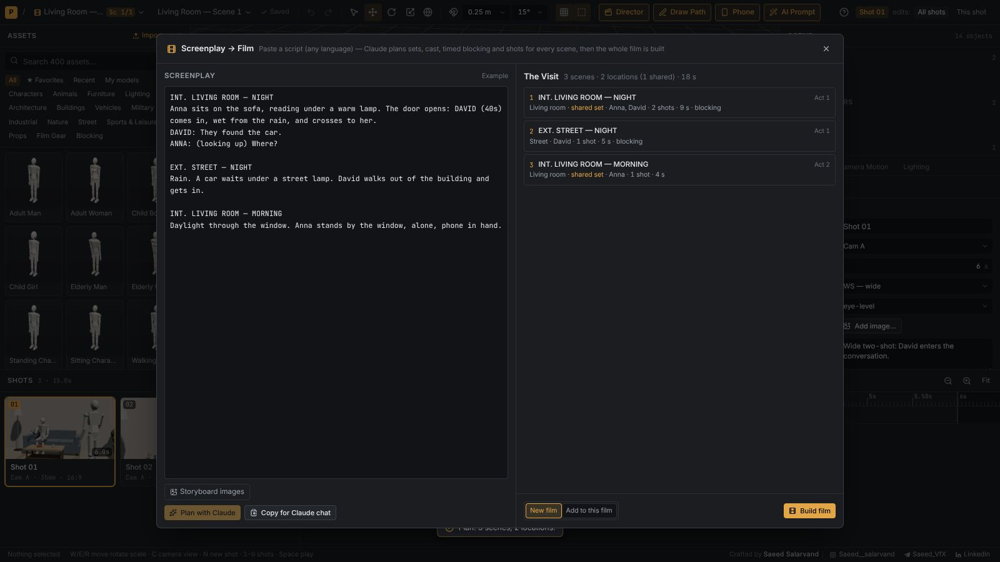
Un guion entero va en el mismo cuadro del Director (se lee como Screenplay); Screenplay → Film… en el menú de película y From a screenplay en Home abren el Director para ello. Cualquier idioma y formato; el resultado está en inglés.
O pulsa Open script file (o suelta el archivo en el cuadro de texto): PDF, Final Draft (.fdx), Fountain, Word (.docx) o texto plano. Los PDF en persa y árabe se leen de derecha a izquierda. Un PDF escaneado sin capa de texto se añade como imágenes de página (hasta 20) para que Claude las lea — con tu clave API; en un chat de Claude, adjunta tú las páginas. Revisa el texto antes de planificar.
- Plan with Claude (clave de API o claude.ai), o Copy for Claude chat → pégalo en tu chat de Claude → pega la respuesta → Read plan. Puedes añadir imágenes de storyboard: se envían con tu clave de API; en un chat de Claude, adjúntalas tú.
- Revisa el plan: cada escena con su encabezado, secuencia, localización, reparto y planos. Los lugares usados por varias escenas aparecen como shared set.
- Elige New film o Add to this film y pulsa Build film. Cada escena se construye por turno: su decorado, reparto, luz y hora del día, blocking con tiempos (los personajes esperan y luego caminan / trotan / corren a sus marcas en los segundos indicados) y planos que empiezan donde ocurre su momento. Un lugar usado de nuevo reutiliza el mismo decorado (enlazado: los cambios del decorado llegan a todas las escenas).
Un guion que la app lee con exactitud
La app lee el formato estándar de guion (el formato de escenas de Final Draft, Fountain, Highland, WriterDuet — y su equivalente en persa) y desglosa el guion como un script supervisor: escenas, lugares, horas, quién está en cada escena, el diálogo en orden y los planos que pide el guion. La ventana muestra lo que leyó (Read as a screenplay: …) y avisa de lo que falta. Cuanto más siga el estándar, más exacta será la película:
- Encabezado de escena en su propia línea:
INT./EXT.— el lugar — la hora (DAY,NIGHT,DAWN,DUSK,CONTINUOUS,LATERo una hora21:30). Puede empezar con un número de escena. - Escribe igual un lugar que se repite: se convierte en un decorado compartido. Una habitación va tras un guion:
HOUSE - KITCHEN. - Presenta a cada personaje la primera vez con su edad (y género si el nombre no lo dice):
EMMA (30s), a tired nurse. La app elige el actor (hombre, mujer, niño, niña, adolescente, mayor). - Acción en presente, lo que se ve: quién se sienta, está de pie, camina, habla por teléfono.
- Nombre del personaje en mayúsculas sobre el diálogo, con
(V.O.)(O.S.)(CONT'D); una acotación(quietly)debajo. - Planos solo cuando importan:
CLOSE ON,ANGLE ON,INSERT,POV,WIDE. Transiciones en su línea:CUT TO:,DISSOLVE TO:. Actos o secuencias como secciones Fountain# ACT ONE; notas[[ … ]].
INT. HOSPITAL - NURSES' STATION - NIGHT
EMMA (30s), a tired nurse, sits at the desk. She looks up.
DAVID (60s) shuffles in, holding a paper cup.
DAVID
(quietly)
You're still here.
CLOSE ON the paper cup.
CUT TO:
EXT. HOSPITAL PARKING LOT - CONTINUOUS
Build from the script (no AI) construye toda la película a partir de lo leído: un decorado amueblado por lugar (cocina, salón, dormitorio, oficina, café, calle, parque, playa…), el reparto por edad y género, personas sentadas o de pie mirando a quien hablan, la luz según la hora y la cobertura del diálogo — plano máster, planos sobre el hombro para dos, planos individuales para un grupo y cada plano que pide el guion — sincronizada con el diálogo. Plan with Claude recibe el mismo desglose y debe seguirlo escena por escena; el plan se compara con él.
Cámara con el teléfono
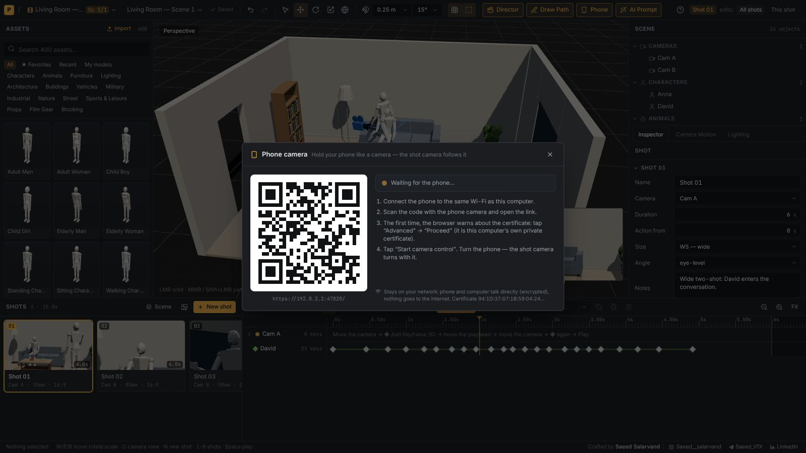
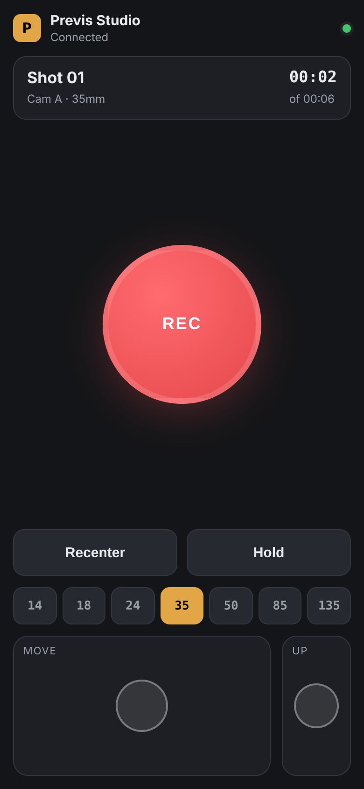
Sostén el teléfono como una cámara: al girarlo, la cámara del plano gira con él. Funciona con la aplicación de escritorio, con el teléfono y la computadora en la misma red Wi-Fi: sin internet, sin cuenta y sin instalar ninguna app en el teléfono.
- Haz clic en Phone en la barra de herramientas. Aparece un código QR (si tu computadora tiene varias redes, elige la que usa tu teléfono).
- Escanéalo con la cámara del teléfono y abre el enlace.
- La primera vez, el navegador muestra una advertencia sobre el certificado: toca Avanzado → Continuar. Es el certificado privado de tu propia computadora; la conexión está cifrada.
- Toca Start camera control (en iPhone, permite Movimiento y orientación). Gira el teléfono: la cámara lo sigue, en relación con su encuadre actual.
| En el teléfono | Qué hace |
|---|---|
| REC / STOP | Reproduce el plano desde el principio y graba tu movimiento; cuando el plano termina (o al pulsar STOP), la toma se convierte en fotogramas clave de cámara (Ctrl+Z la deshace). |
| Recenter | Vuelve a la dirección inicial con el horizonte nivelado. |
| Hold | Suelta la cámara para que puedas reacomodarte; vuelve a tocar para retomarla sin saltos. |
| Botones de lente | 14 · 18 · 24 · 35 · 50 · 85 · 135 mm. |
| Pad de movimiento · Deslizador vertical | Dolly / travelling de la cámara sobre el suelo; pedestal arriba / abajo. |
Exportar una animática
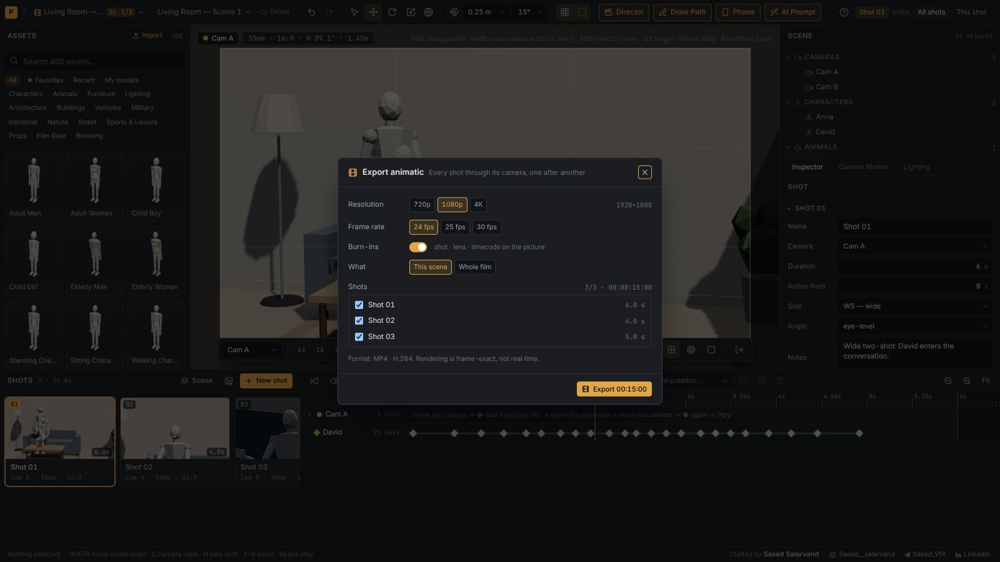
Menú de proyecto → Export animatic (video)… o Ctrl+E. Elige 720p, 1080p o 4K, 24/25/30 fps, qué planos incluir y los textos sobreimpresos (burn-ins: plano, cámara y lente, timecode del plano, timecode continuo, nombre del proyecto). Cada plano se renderiza a través de su propia cámara, uno tras otro, con bandas (letterbox) según su relación de aspecto. El resultado es un archivo MP4 (H.264), o WebM donde H.264 no esté disponible. El render es exacto por fotograma, así que incluso una computadora lenta produce un video con la temporización perfecta.
Storyboard (PDF)
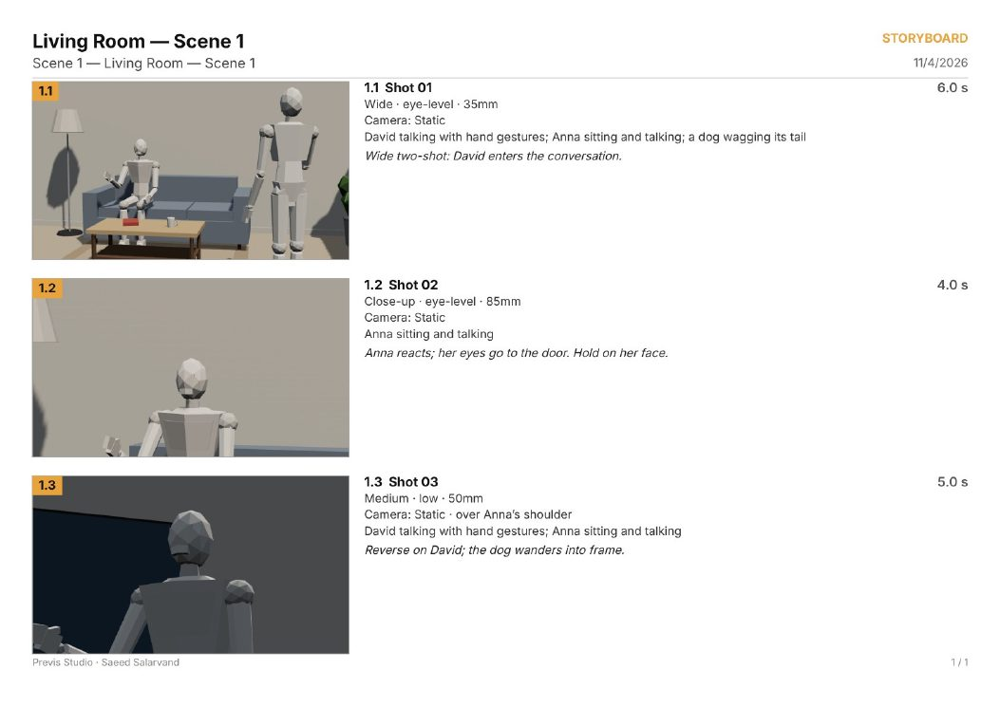
Menú del proyecto → Export storyboard (PDF)… (Ctrl+Shift+E), o el botón de storyboard en la línea de tiempo de la película para toda la película. Cada plano se convierte en una viñeta renderizada desde su propia cámara, numerada escena.plano, con su duración, tamaño de plano, ángulo, lente, movimiento de cámara, quién está en cuadro y qué hace, y tus notas (el persa y otros alfabetos se imprimen bien). Los planos en los que se mueve la cámara o un actor llevan su último fotograma como un pequeño recuadro.
- What: esta escena, toda la película o una secuencia. Cada escena empieza en una página nueva.
- Panels per page: 1, 2, 3 (lista de planos: imagen y texto lado a lado), 4 o 6 · A4 o Letter · horizontal o vertical.
- Show: cámara y acción, notas, fotograma final.
Estudio de anuncios de producto (Product Ad)
Cambia la barra de Film a Product Ad para anuncios de producto. 60 productos en 10 categorías (fragancia, maquillaje, cuidado personal, bebidas, comida, tecnología, relojes y joyas, moda, hogar, deporte y herramientas) — Products tiene búsqueda y filtros por categoría; cada uno tiene tamaño, ancho y alto y un material por pieza. El frasco de perfume es el más detallado (tapón, etiqueta, animación de piezas). Cualquier modelo importado puede usarse como producto (Products → Use selected object as product).
- Products → New product ad: un proyecto nuevo con plató, el frasco, una cámara héroe e iluminación de lujo.
- Templates: elige duración (6, 10, 15 o 30 s) y formato y pulsa Build. Obtienes planos reales y editables, cada uno con su movimiento de cámara, animación del producto y texto. Se deshace en un paso.
- Music edit (montaje con música) — el anuncio montado sobre una canción. Add music… (MP3, WAV, M4A, OGG, FLAC): se analizan su tempo (BPM), pulsos, compases, secciones (intro, subida, drop, principal, break, final), el drop y el golpe final, dibujados sobre la forma de onda. Cortar y ajustar la música: arrastra los tiradores de inicio / fin (se ajustan a las líneas de compás), elige una duración (6–60 s o cualquiera) — se quitan compases enteros en las frases (se conservan el inicio, el drop y el final propio de la canción) o se repite una frase de la parte más fuerte para alargarla — con Keep the song’s own ending, fundidos, volumen y Listen. Cut to the music: la música elige el estilo (o tú), los movimientos y cuántos (o usa los tuyos, en orden): los cortes caen en el pulso y en las líneas de compás, las partes tranquilas llevan planos largos y suaves, las fuertes planos cortos y contundentes, la subida corta cada vez más rápido hasta el drop, el drop abre con un acercamiento justo en el pulso y el último plano es siempre el packshot, sobre el golpe final. 3 versions…: sobre la música · más rápido, cortando en los golpes · planos largos y fluidos con movimientos combinados. Shots · edit by hand: cada movimiento de cámara es un plano — muévelo antes / después, cambia su movimiento, alárgalo o acórtalo un pulso o escribe su duración, duplícalo o bórralo; la música sigue continua en todo el montaje; luego Re-cut to the music vuelve a poner cada corte en el pulso y ajusta el montaje a la música. El packshot siempre queda el último (aunque lo arrastres).
- Auto edit (montaje automático): elige movimientos de cámara (cualquier número, en orden — o ninguno y el estilo elige), una duración y un estilo (lujo, enérgico, tecnológico, minimalista) y pulsa Build the edit: todo el anuncio queda montado en planos. Opciones: una sola toma continua, cortar al ritmo de la música (con música). Todo montaje termina en un packshot — siempre el último plano. 3 versions… muestra tres montajes de la misma elección. 9:16 / 16:9 / 1:1 / 4:5 copy crea el mismo anuncio en otro formato como escena nueva. Plan with Claude (free): describe el anuncio, Copy prompt en un chat de Claude, pega la respuesta y Build from the answer (o Ask Claude now con tu clave de API). Entre planos: como prefiera el estilo, cortes, match cuts (el plano siguiente empieza en el ángulo donde terminó el anterior, más cerca o más abierto) o barridos (whip pans). El montaje sigue las reglas de la publicidad: en cada corte cambia el tamaño del plano (general, medio, corto, macro) o el ángulo en 30° o más — sin saltos de eje — una sola dirección de pantalla, la cámara sigue moviéndose en los cortes y solo el último plano se asienta, las órbitas mantienen un ritmo tranquilo, los planos medios van en los tercios y, si no eliges movimientos, el estilo cuenta una historia (detalle, revelación, héroe, detalles, energía, packshot).
- Pestaña Product: forma, tamaño, tapón, nivel de líquido, etiqueta; un material por pieza (vidrio, oro, cromo…); sube arte de etiqueta y un logo para el tapón; guárdalo en My Library.
- Animate: 30 animaciones para este producto (las miniaturas muestran el movimiento real). Haz clic para aplicar y previsualizar. Ajusta inicio, duración, velocidad, intensidad, curva, dirección, bucle y añade una flotación continua encima. Las que no encajan (p. ej. de dos productos con uno solo) se señalan antes de aplicarse.
- Camera: 60 movimientos en grupos (dolly y slider, órbita, arriba y abajo, paneo e inclinación, lente y foco, macro, combinados), encuadrados según el tamaño del producto; pasa el ratón por una tarjeta para ver el movimiento. Si el plano ya tiene un movimiento eliges: Add after (uno tras otro — el plano se alarga), Replace o Combine (los dos a la vez, p. ej. órbita + acercamiento). Cada movimiento de la lista se edita: duración, curva de velocidad (con speed ramp), lente, cantidad, distancia, altura, diafragma, dirección y, desde el 2.º, Continue (sigue desde donde está la cámara) u Own framing; reordena o quita movimientos. Las claves de la línea de tiempo se rehacen cada vez. Angle gira todo el movimiento alrededor del producto e In frame coloca el producto en el tercio izquierdo o derecho. Cada producto empieza desde su mejor lado (un reloj o un zapato a tres cuartos, una tetera de perfil).
- Light / Lighting: 16 looks de estudio con luces reales; fondo, suelo (mate, brillo, espejo), reflejos y tu propio HDRI.
- Brand: nombre, colores, fuente, logo; titular, precio, llamada a la acción… con animaciones de entrada y salida. Se ven sobre el encuadre (C) con zonas seguras y se incrustan en las exportaciones.
- Effects: barrido de luz, partículas, brillo, cambio de color de fondo, revelado desde la sombra, viñeta, condensación.
- Export: vídeo del anuncio, storyboard PDF, prompts y fotogramas para IA, lista de planos CSV, JSON del anuncio, GLB del producto, fotogramas hasta 4K, PNG transparente, secuencia PNG.
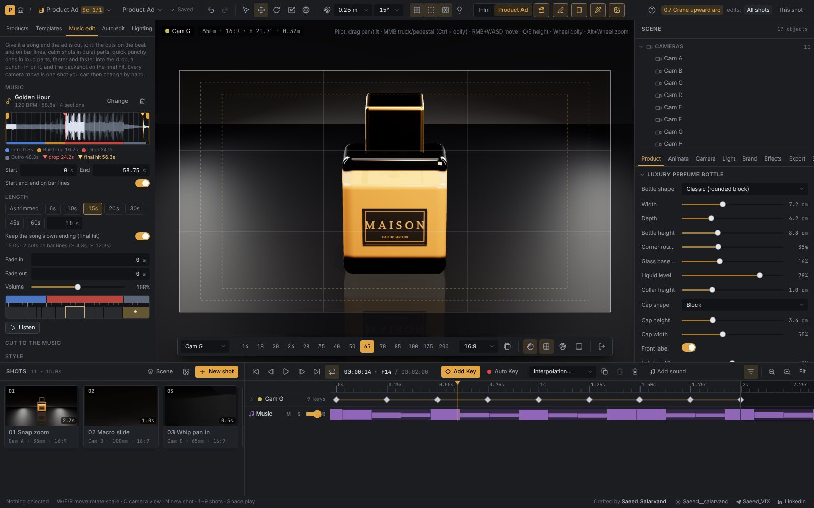
Prompt y fotogramas para IA
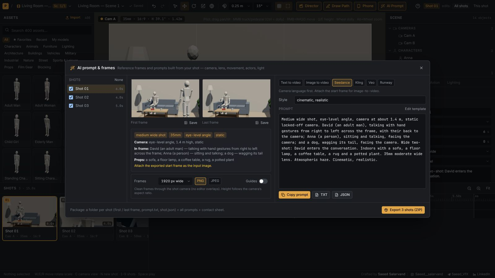
Convierte un plano de previs en lo que necesita un generador de vídeo con IA: un primer y un último fotograma limpios a través de la cámara del plano, y un prompt en inglés escrito a partir de lo que realmente hay en tu escena. Pulsa AI Prompt en la barra de herramientas (Shift+A).
- Qué lee del plano: el tamaño de plano (según cuánto muestra el encuadre del personaje principal), el ángulo y la altura de cámara, la focal, el movimiento de cámara (dolly, travelling lateral, panorámica, tilt, grúa, arco, zoom, cámara en mano) y su velocidad, quién está en cuadro, dónde, hacia dónde mira, qué hace y hacia dónde camina, el encuadre sobre el hombro, el cambio de foco, las luces y la hora del día, y tus notas del plano. No se inventa nada.
- Preajustes: Text to video, Image to video, Seedance, Kling, Veo y Runway. Cambian el orden y el énfasis (Runway: corto, solo movimiento, sin prompt negativo). Los preajustes de imagen a vídeo describen solo lo que se mueve — adjunta el primer fotograma exportado.
- Style: tus propias palabras («cinematic, 35mm film, moody»), separadas de los datos de la escena.
- Edita el prompt libremente (regenerate recupera el generado) o usa Edit template para reescribir un preajuste con marcadores como
{{shot}},{{camera}},{{subjects}},{{lighting}}. - Copy prompt, o guárdalo como TXT o JSON estructurado. Save bajo cada fotograma lo renderiza a 1280–3840 px, PNG o JPEG, con guías de tercios si quieres.
- Export … shots (ZIP): una carpeta por plano (primer y último fotograma,
prompt.txt,shot.json), másall-prompts.txt,shots.jsony una hoja de contactos.
Proyectos y archivos
- El trabajo se guarda automáticamente (el indicador junto al nombre del proyecto; Ctrl+S guarda al momento). El botón S / casa a la izquierda de la barra (Ctrl+Shift+H) va a Home con todas tus películas; Esc vuelve. Ctrl+O abre la lista de escenas; el menú de proyecto incluye New, Rename y Save a copy.
- Save to file… escribe un archivo
.previs.json(en la aplicación de escritorio, con el diálogo Guardar habitual). Open file… carga uno. Arrastra un archivo de proyecto a la ventana para abrirlo. - Deshaz / rehaz todo con Ctrl+Z / Ctrl+Shift+Z. El botón History a su lado lista cada cambio con su hora: haz clic en uno para volver justo después de él (o avanzar de nuevo).
Atajos de teclado
En macOS usa ⌘ donde dice Ctrl.
| Teclas | Acción |
|---|---|
| Q W E R | Seleccionar · mover · rotar · escalar |
| X · S · G | Ejes globales/locales · ajuste · cuadrícula |
| U | Luz plana: todas las luces de la escena, el sol / la luna y las sombras apagadas, con una luz neutra uniforme — ver el plano sin su iluminación (solo vista; pulsa de nuevo para volver) |
| F · End | Encuadrar la selección · dejar caer sobre la superficie inferior |
| H · Alt+H | Ocultar selección · mostrar todo |
| Ctrl+D · Delete | Duplicar · eliminar |
| Ctrl+G · Ctrl+Shift+G · Ctrl+A | Agrupar · desagrupar · seleccionar todo |
| Ctrl+Z · Ctrl+Shift+Z / Ctrl+Y | Deshacer · rehacer |
| C · Shift+C · P | Vista de cámara · nueva cámara desde la vista · modo piloto |
| [ ] | Cámara anterior / siguiente |
| N · 1–9 · 0 | Nuevo plano · ir al plano · escena base |
| Space · Home | Reproducir / pausar · ir al inicio |
| K · Shift+K | Añadir clave (objetos seleccionados; si no, la cámara) · Auto Key |
| ← → · Shift+← → | Fotograma anterior / siguiente · clave anterior / siguiente |
| D · Shift+D | Director · Draw Path |
| Ctrl+K · Alt+1…5 | Buscar cualquier cosa · Write, Stage, Camera, Edit, Deliver |
| Shift+F | Línea de tiempo de la película |
| Shift+A | Prompt y fotogramas para IA |
| L · Shift+L | Pestaña Lighting · añadir una luz spot |
| Ctrl+S · Ctrl+O · Ctrl+E | Guardar · proyectos · exportar animática |
| Ctrl+Shift+E | Storyboard (PDF) |
| Ctrl+Shift+H | Inicio (todas las películas) |
| Enter · Esc | Aplicar / cancelar una trayectoria dibujada · borrar la selección |
Solución de problemas
| Problema | Prueba esto |
|---|---|
| La página del teléfono no se abre | El teléfono y la computadora deben estar en la misma red Wi-Fi (no en una red de invitados). Elige la dirección correcta debajo del código QR. En Windows, permite la app en redes privadas en el firewall. |
| El teléfono se conecta, pero la cámara no se mueve | Toca Start camera control. En iPhone: Ajustes → Safari → Acceso a movimiento y orientación. Asegúrate de que haya un plano activo en la app. |
| “Connect Claude” indica que la clave no se acepta | Copia la clave completa (empieza por sk-ant-) y comprueba que tu cuenta de Anthropic tenga saldo. |
| La vista va lenta | Oculta lo que no necesites (H), cierra otras apps que usen mucho la GPU, usa la aplicación de escritorio en una computadora con GPU dedicada. |
| macOS dice que la app está dañada | Consulta Instalación: la app aún no está notarizada; usa Abrir igualmente. |